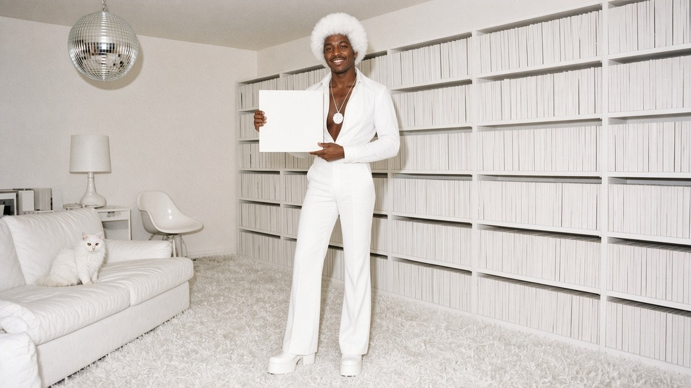
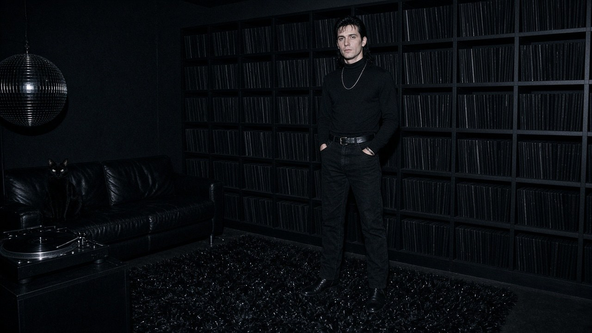
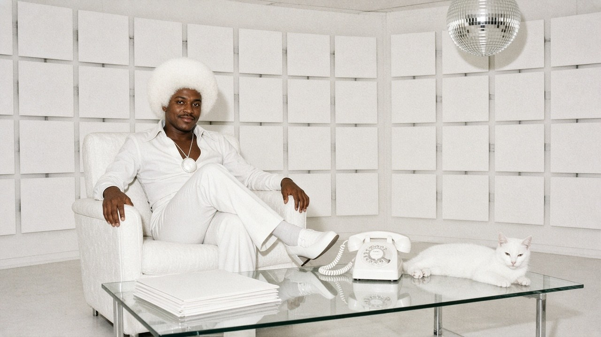

Vinyl desk · The interview ·
“Surfaces Should Be White”
Clarence Langston of North Fudgeley, Ohio, owns 5,000 White Albums, and a best friend who only collects the Black Album.
Clarence opens the door and we briefly lose him in it. Everything is white: the shag, the sofa, the cat, and Clarence. We sit carefully.
Clarence, how many White Albums do you own?
Five thousand and twelve. I bought twelve more this morning. Vern rings me when a copy comes in. Sometimes he rings me when it doesn’t.

So why this album?
Because they made one that is white. No faces, no silly colours, no motorcycle. A sleeve is a surface. Surfaces should be white.
“A sleeve is a surface. Surfaces should be white.”
What’s in the rest of the flat?
White. The carpet, the cat — her name is Snowball — the turntable, which I own for the look. The calendar still says 1977. I like that calendar.
Where do you keep them all?
Where don’t I? The shelves were full by 1983. After that, furniture became a suggestion.


And the afro?
Bleached. Twice a month at Darlene’s cousin’s salon. It burns a little. Beauty often does.
Is that a rubber?
Pink. Soft. Block. For the smudges. I keep a white eraser for the pink eraser. It’s a system.

Who’s Raymond?
My best friend. He only collects the black one. Five thousand copies, last I checked. I told him white got there first. He says black is a classic.
Do you visit each other?
We can’t. I disappear in his flat and he disappears in mine. Last time we found him by the smell of his leather jacket.
Who’s winning?
We argue every Saturday at Vern’s. He says black is deeper. I say white is cleaner. Vern’s phone is beige. We don’t trust him.
Advertisement · fake

Can you find anything in here?
Eventually. Everything in the fridge is white. I once drank a bottle of glue. It was fine. Permanent, actually.
Do you ever buy other records?
I tried a white label promo once. Too much information on it. Letters are a colour, if you think about it. I returned it.
What’s your favourite song on the album?
The sleeve is extraordinary. The spine especially. Have you noticed the way the cardboard takes the light?
Any track. Any title at all.
…The long one. Track… three? Listen, can we talk about the corners? I don’t do grey.
We asked Raymond the same question.
I know. He said “the quiet bits between the songs, where it’s blackest.” Then he changed the subject to his sofa.
Any advice for our readers?
Support your local record shop. Vern’s putting in white shelves on one side and black shelves on the other. Consistency is a virtue.
Fine print: Clarence Langston, Raymond Blackwell, Snowball and Vern are invented. The White Album and the Black Album are real; this collection is not. No cats were lost for more than a weekend.
← Back to the lobby